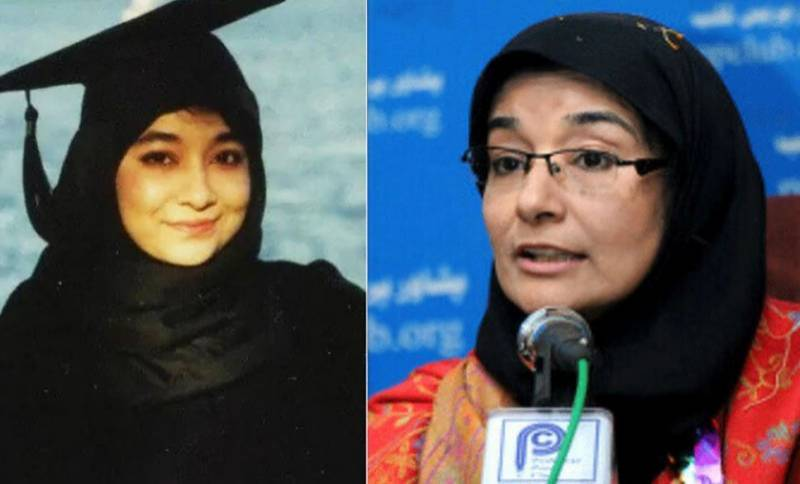

Aafia
farhan abbasi
farhan abbasi
jameel khan rawalpindi
style="color: blue;" farhan abbasi

Siddiqui was born in Pakistan to a Sunni Muslim family.[1] For a period from 1990
, she studied in the United States and obtain
ed a BS from Massachusetts Insti
tute of Technology and a PhD in neur
oscience from Brandeis Uni
versity in 2001.[9][10] She re
turned to Pakistan for a time follow
ing the 9/11 attacks and ag
ain in 2003 during the war in Afghani
stan. Khalid Sheikh Mohammad na
med her a courier and financier for al-Q
aeda, and she was placed on the U.S. Federal Bureau of
Investigations's Seeking Information – Terrorism list; she remains the only woman to have been featured on the list.[11][12][13] Around this time, she and her three children were allegedly kidnapped in Pakistan.[11]